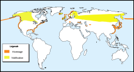
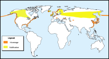

| Horned Grebe | |
|---|---|
| Breeding plumage | |
| Conservation status | |
| Binomial name | |
| Podiceps auritus (Linnaeus, 1758) |
|
|  | |
Summer Winter |
|
| Synonyms | |
|
Colymbus auritus |
| Horned Grebe | |
|---|---|
| Breeding plumage | |
| Conservation status | |
| Binomial name | |
| Podiceps auritus (Linnaeus, 1758) |
|
|  | |
Summer Winter |
|
| Synonyms | |
|
Colymbus auritus |
The Horned Grebe or Slavonian Grebe, Podiceps auritus[2], is a member of the grebe family of water birds.
It is a small grebe at 31–38 centimetres (12–15 in) long with a 46–55 centimetres (18–22 in) wingspan. Unmistakable in summer, the male's plumage includes a black head with brown puffy earlike tufts along the sides of its face. It shows a deep red neck, scarlet eyes, and a small, straight black bill tipped with white. It rides high in the water.
Slavonian Grebes breed in vegetated areas of freshwater lakes across Europe and Asia. It also breeds in remote inland parts of the United States and much of Canada. Most birds migrate in winter to the coast. During this time, this small grebe is mainly white with a sharply defined black cap.
Like all grebes, it builds a nest on the water's edge, since its legs are set very far back and it cannot walk well. Usually two eggs are laid, and the striped young are sometimes carried on the adult's back.
The Slavonian Grebe is an excellent swimmer and diver, and pursues its fish prey underwater.
During breeding, the male's call is heard as an odd, striking series of loud croaks and chattering notes followed by prolonged shrieks.
Folk names of this bird include Devil-diver, hell-diver, pink-eyed diver, and water witch. Its name is often abbreviated by British birders to "Slav Grebe" or simply "Slav".
The Slavonian Grebe is one of the species to which the Agreement on the Conservation of African-Eurasian Migratory Waterbirds (AEWA) applies.
In the lore of the Blackfeet, the trickster Old Man tricked several ducks into closing their eyes and dancing while he killed them one by one. However, the smallest duck looked, saw Old Man, and alerted the other ducks. This "duck" was the Horned Grebe, who became the first to notice trouble.[3]


{kind=link}
{kind=link}
{kind=link}